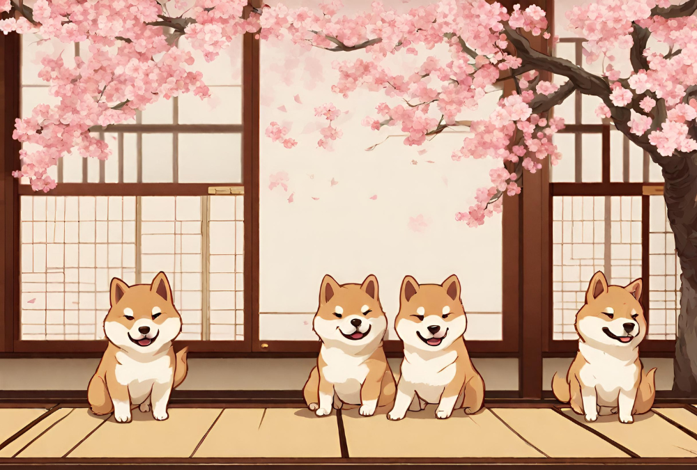
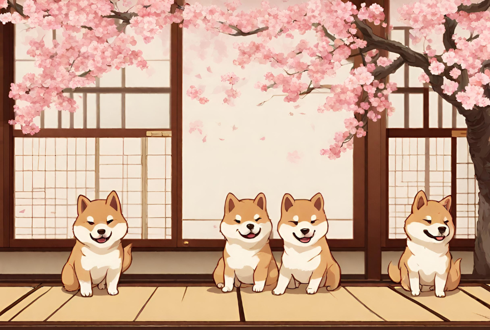

ストーリー
 4匹の柴犬を飼っている和花。彼女は和風の世界を舞台に、勇気を持って新たな旅に出発します。道中で彼女は様々な試練に直面しますが、彼女の心の強さと飼い犬達の忠誠心が彼女を支えます。彼女は新しい友達や仲間と出会い、困難を乗り越えながら成長していきます。
 4匹の柴犬を飼っている和花。彼女は和風の世界を舞台に、勇気を持って新たな旅に出発します。道中で彼女は様々な試練に直面しますが、彼女の心の強さと飼い犬達の忠誠心が彼女を支えます。彼女は新しい友達や仲間と出会い、困難を乗り越えながら成長していきます。
| タイトル | 柴犬物語 |
| ジャンル | 育成系アクションパズルゲーム |
| プラットフォーム | shitchのみ |
| プレイ人数 | 1~4人(オフライン) |
| 発売日 | 好評発売中(未来) |
| CERO | CEROa(全年齢対象) |